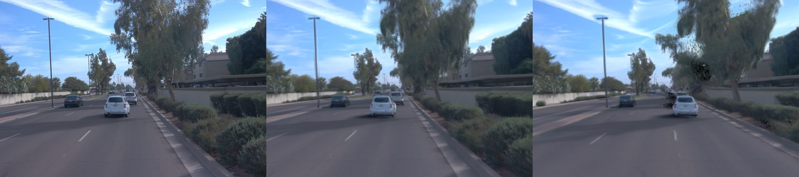
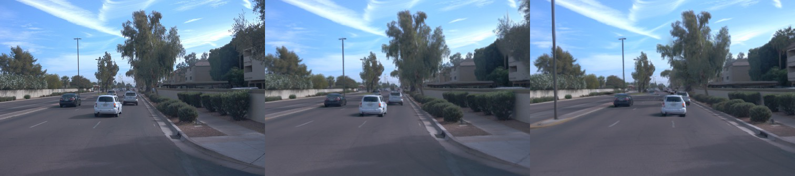

StreetForward: Perceiving Dynamic Street with Feedforward Causal Attention Zhongrui Yu Li Auto Inc. Zhao Wang Li Auto Inc. Yijia Xie∗ Zhejiang University Yida Wang† Li Auto Inc. Xueyang Zhang Li Auto Inc. Yifei Zhan Li Auto Inc. Kun Zhan Li Auto Inc. Spatial Extrapolation Input Temporal Interpolation Depth Normal Motion Dyn. Map Figure 1: StreetForward: High-fidelity spatio-temporal extrapolated view synthesis via feedforward 3DGS dynamic street reconstruction. The right pane illustrates our 3DGS representation of a dynamic street with precise velocities, enabling motion- aware rendering at novel poses and times independent of segmentation or tracking. Abstract Feedforward reconstruction is crucial for autonomous driving appli- cations, where rapid scene reconstruction enables efficient utiliza- tion of large-scale driving datasets in closed-loop simulation and other downstream tasks, eliminating the need for time-consuming per-scene optimization. We present StreetForward, a pose-free and tracker-free feedforward framework for dynamic street re- construction. Building upon the alternating attention mechanism from Visual Geometry Grounded Transformer (VGGT), we pro- pose a simple
下面内容为论文中的关键技术句段抽取，并结合关键词（method / architecture / loss / ablation / experiment 等）组织，目标是帮助快速把握方法与实验逻辑，而不是仅做翻译。




基于标题关键词在 arXiv 自动检索到的相关论文（用于补充技术上下文）：
这篇论文的核心价值在于： (1) 把 feedforward / 场景建模问题转化为可扩展的工程路径； (2) 通过训练目标与表示设计平衡质量和效率； (3) 为自动驾驶仿真或可控 world model 提供可连接的上层接口。 建议后续重点对照 ablation 与 error case，判断其泛化边界。